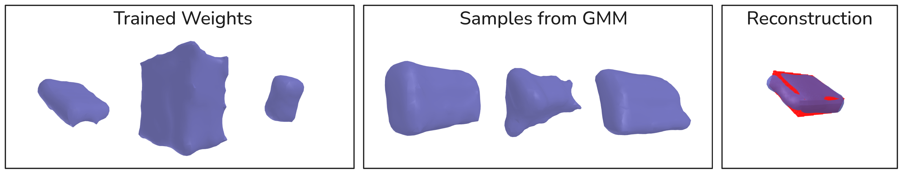
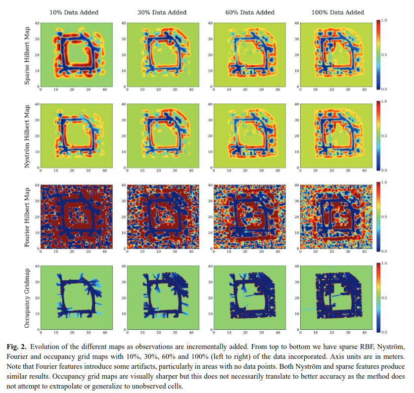

<< Back
Introduction
Last time, I had the following action items:
- Visualize the GMM prior (eigenvectors, means, determinants)
- Use GMM prior + SVGD
- Look into different feature representations, etc.
This write-up starts by doing a few hyperparameter adjustments to the
stuff that I had set up from last time. Then, tackles each of the 3
action items.
Small Hyperparameter Tests
Overview

Above is the method used last time; which is also used in these
hyperparameter tests. There were a few suggestions from last time such
as the kernel type, hinge point alignment, reconstructing a box instead
of an object
Test 1
- Gaussian Kernel
- More Hinge Points
- Gravity-Aligned Hinge Points
- More Data During GMM creation
Test 2

- Everything from Test 1, But:
- Laplacian Kernel
- Widened Prior Gaussians in GMM (added identity matrix to covariance
matrices)
Because this one went better, I figured I’d try to reconstruct the
YCB objects from last time. Here is a figure with the results from
that:
Thoughts
- I think Widening the covariances worked
- I Think that the actual hinge point space could be more expressive,
however.
- In Theory you can have arbitrary accuracy, but in practice it takes
a lot of hinge points (especially if regularizing weight norm)
- Perhaps a new feature representation?
- Another thing I noticed is that you can go too far when widening the
covariance matrices; such that you get weird shapes that don’t make
sense
Visualizing The GMM
One of the action items was calculating some visuals or stats about
the GMM that was used as a prior.
- The determinant of each GMM component was basically 0 (near machine
precision)
- Max eigenvalues were (per component):
- [3153.7102, 734.3250, 1593.3590, 1254.8436, 1152.2594, 3005.7234,
1322.9877, 1915.3854]
- Min eigenvalues were (per component):
- [0.0009, 0.0009, 0.0009, 0.0009, 0.0009, 0.0009, 0.0009,
0.0009]
Here are the hyperparameters for this:
| hyperparameter |
value |
| kernel |
gaussian |
| widened? |
no |
| number of GMM components |
8 |
| dimension of weight |
513 |
Obviously, if the GMM covariances are widened like in Test 2, then the determinants would be bigger.
Main Takeaway: There exists more than one direction
(not pictured) where varying the weight in that direction results in
pretty much the exact same shape.
Note: I kind of made a stupid mistake in not having
enough data, so I regenerated the dataset and ran stuff again, but it
was the same sort of results as far as eigenvectors, determinants, etc.
However, here are a couple reconstructions of boxes from that approach
(which look much better than before):
Here are the YCB objects:
Note: These reconstructions are without artificially
widening the covariances of each GMM component!
Thoughts on
Learning a Feature Representation
Periodic Representation
In the SIREN paper [1], they argue for periodic
activation functions to learn the high frequency details. With a
learnable W, b, their embedding is:
\phi(x) = \sin(Wx + b) A similar
reason is cited in the NeRF paper [2] for using their own
hand-crafted periodic embedding: \phi(x) =
[\sin(2^0 \pi x), \cos(2^0 \pi x), ..., \sin(2^{L - 1} \pi x),
\cos(2^{L-1} \pi x)]^\top Specifically, the NeRF paper cites
[3],
which argues that neural networks have a bias towards low frequency
information and Fourier representations could help overcome this. The
original Hilbert maps paper [4] also explored Fourier
embeddings. Here is a screenshot from the paper with a comparison:

As shown in the screenshot; one potential problem is unwanted
artifacts from the periodic nature of the embedding.
Another paper, [5] argues for using Random
Fourier Features to learn high frequency functions. They also claim that
tuning the weights and biases of this representation provides minimal
improvement.
Unifying Hinge Points and
SIREN
Random Fourier features, introduced in [6] showed that a positive-definite
kernel could be approximated for learning purposes via cosines and sines
of random weights. Consider a SIREN network with one hidden layer: f(x) = w_2^\top \sin(W_1 x + b_1) + b_2.
Now consider if we could find an underlying input z such that: w_2
= \sin(W_1z + b_1). Then, we could view f(x) as the following approximation: f(x) \approx \phi(x)^\top \phi(z) + b_2 = k(x - z)
+ b_2. Thus, we can view as the network “learning” a kernel
k defined by the distribution of
weights and corresponding hinge point z.
Idea: This hints at the idea of learning the kernel
+ hinge points offline
Feature
Representation via Dimensionality Reduction
We could also construct a better feature representation via
dimensionality reduction attached to our hinge point transform. There
are a few options.
PCA/Linear: We could learn a linear dimensionality
reduction, A, over the weight space.
Because this would be linear; we could transform features via: \phi'(x) = A^\top \phi(x), creating a
lower dimensional weight space.
- This might be difficult because some dimensions are uninformative
(see the Visualizing The GMM
section)
Autoencoder/Non-linear: We could also do a similar
thing by training an autoencoder. We wouldn’t be able to do the exact
same trick as last time, but we could run SVGD [7] through it easily
VAE: There is also a possibility that we could train
a VAE, then use the latent distribution as a prior of some sort.
Training
I think the best way to train a feature representation would be to
train it on the [8] dataset objects (not scenes,
just objects), and do one of the following:
- Train it similar to DeepSDF [9] where a latent vector is stored
for each object during training. This would allow training parameters of
the feature representation.
- This might cause a hiccup if you want to have pose randomization,
but I have an idea.
- For each object, first fit an implicit shape, then do learning with
those found weights (what I am doing right now)
- Do a little bit of optimization-based reconstruction with parameters
frozen in weight space, then optimize the shape w.r.t. parameters of
feature transform
Idea: during optimization-based reconstruction, also
optimize the pose. This would alleviate the need to randomize pose
during training (especially if SVGD is used). Could also do this with
scale.
Idea: Train in a similar way to DeepSDF, allow
optimization of pose and scale during reconstruction. Add regularization
to the weights that are learned so that they follow a standard Gaussian
distribution. Then the standard Gaussian distribution could be the
prior. Here is a sketch of my idea:
SVGD + New Feature
Representations
SVGD + GMM
- Gaussian kernel
- GMM Prior with 8 components
- 32 particles
- Used median kernel suggested in original paper: [7].
- 1k iterations with Adam as the optimizer
- (like above, weight/feature space is 513-dim)
Sinusoidal Feature
Representation
- Uses BHM EM algorithm
- Following advice from [5], variance of RFF is tuned
- Is better able to capture high-frequency information
- Struggles more to reconstruct the backside of the object
- 2048 features
Idea: maybe combine hinge points and fourier?
Here is an example of RFF trained with GD, not EM algorithm:
- Artifacts are present, but still picks up the important signal
- I think having the distribution removes these artifacts
Question: is there any way to ensure these artifacts
don’t appear?
- Fails to construct backside
- Does a very good job with the surface
Random Hinge Points
- Added a small amount of random noise to hinge points
- 512 hinge points
- For some reason, EM algorith is slower with hinge point
representation compared to fourier with the same number of features
Hacking Binary into
Multiclass
- Problem: We have K
binary maps of the form: \sigma(f_k(w_k,
x)). We want to construct a multiclass map with these
components.
- The reason why we have to consider these separately is that they
probably don’t share the same hinge points (as that would be
inefficient).
- The idea: instead of the sigmoid function, what if we threw all the
f_k together and did a softmax: \text{softmax} ([ 0, f_1(w_1, x), ..., f_K (w_K,
x)]^\top)
- This would create a multiclass map, but it likely loses theoretical
significance.
Question: What are y’alls thoughts about this?
- There is also work [10] that argues for a one-vs-all
approach to multiclass regression
- In order to be true to this, we could also create a classifier for
empty space; but this would remove any benefit our prior gives us.
Looking Forward
I think I want to do the following looking forward:
- Add GMM Prior for RFF features
- Think more about making a better feature representation
- Floating artifacts
- Capture detail + reconstruct backside
- I want to try some more stuff out with stein; sine embeddings,
stochastic, etc.
Looking even further forward:
- Is constructing a GMM from Shapenet a possibility?
Question: What do y’all think about the RFF
embedding?
Question: What should be the target looking
forward?
References
[1]
V.
Sitzmann, J. Martel, A. Bergman, D. Lindell, and G. Wetzstein,
“Implicit neural representations with periodic activation
functions,” Advances in neural information processing
systems, vol. 33, pp. 7462–7473, 2020.
[2]
B.
Mildenhall, P. P. Srinivasan, M. Tancik, J. T. Barron, R. Ramamoorthi,
and R. Ng, “Nerf: Representing scenes as neural radiance fields
for view synthesis,” Communications of the ACM, vol. 65,
no. 1, pp. 99–106, 2021.
[3]
N.
Rahaman, A. Baratin, D. Arpit, F. Draxler, M. Lin, F. Hamprecht, Y.
Bengio, and A. Courville, “On the spectral bias of neural
networks,” in International conference on machine
learning, 2019, pp. 5301–5310.
[4]
F.
Ramos and L. Ott, “Hilbert maps: Scalable continuous occupancy
mapping with stochastic gradient descent,” The International
Journal of Robotics Research, vol. 35, no. 14, pp. 1717–1730,
2016.
[5]
M.
Tancik, P. Srinivasan, B. Mildenhall, S. Fridovich-Keil, N. Raghavan, U.
Singhal, R. Ramamoorthi, J. Barron, and R. Ng, “Fourier features
let networks learn high frequency functions in low dimensional
domains,” Advances in neural information processing
systems, vol. 33, pp. 7537–7547, 2020.
[6]
A.
Rahimi and B. Recht, “Random features for large-scale kernel
machines,” Advances in neural information processing
systems, vol. 20, 2007.
[7]
Q.
Liu and D. Wang, “Stein variational gradient descent: A general
purpose bayesian inference algorithm,” Advances in neural
information processing systems, vol. 29, 2016.
[8]
A.
X. Chang, T. Funkhouser, L. Guibas, P. Hanrahan, Q. Huang, Z. Li, S.
Savarese, M. Savva, S. Song, H. Su, and others, “Shapenet: An
information-rich 3d model repository,” arXiv preprint
arXiv:1512.03012, 2015.
[9]
J.
J. Park, P. Florence, J. Straub, R. Newcombe, and S. Lovegrove,
“Deepsdf: Learning continuous signed distance functions for shape
representation,” in Proceedings of the IEEE/CVF conference on
computer vision and pattern recognition, 2019, pp. 165–174.
[10]
R.
Rifkin and A. Klautau, “In defense of one-vs-all
classification,” The Journal of Machine Learning
Research, vol. 5, pp. 101–141, 2004.